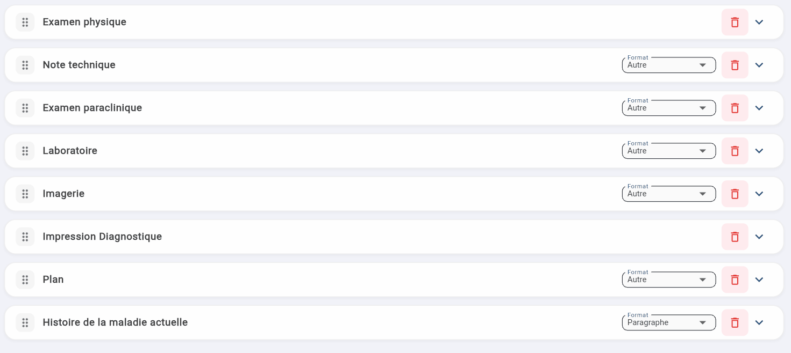
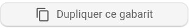

Gérer vos gabarits personnalisés
Modifier, réorganiser et dupliquer vos gabarits depuis la page Gabarits de notes.
Modifier un gabarit existant
1
Cliquez sur le gabarit à modifier dans votre liste à gauche.
2
Modifiez directement les sections, le format ou le contenu.
3
Cliquez Ajouter une section pour ajouter une section vierge.
4
Pour supprimer une section, cliquez sur l'icône de poubelle rouge à droite de la section.
5
Cliquez Sauvegarder pour enregistrer les changements.
Réorganiser les sections
Les sections sont réorganisables par glisser-déposer (icône à gauche de chaque section). L'ordre dans le gabarit correspond à l'ordre dans la note générée.

Dupliquer un gabarit
Le bouton

en bas à gauche crée une copie identique. Utile pour :- Tester des modifications sans affecter votre version en production.
- Créer des variantes pour différents contextes (ex. suivi court vs évaluation complète).